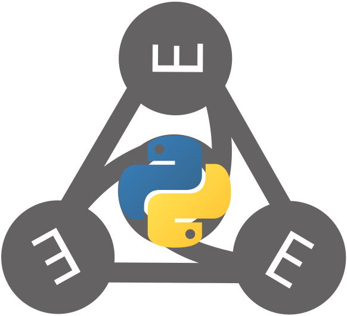

EMMOntoPy¶
Library for representing and working with ontologies in Python.


EMMOntoPy is a Python package based on the excellent Owlready2, which provides a natural and intuitive representation of ontologies in Python. EMMOntoPy extends Owlready2 and adds additional functionality, like accessing entities by label, reasoning with FaCT++ and parsing logical expressions in Manchester syntax. It also includes a set of tools, like creating an ontology from an Excel sheet, generation of reference documentation of ontologies and visualisation of ontologies graphically. EMMOntoPy is freely available for on GitHub and on PyPI under the permissive open source BSD 3-Clause license.
EMMOntoPy was originally developed to work effectively with the Elemental Multiperspective Material Ontology (EMMO) and EMMO-based domain ontologies.
It has now two sub-packages, ontopy and emmopy, where ontopy is a general package to work with any OWL ontology, while emmopy provides extra features that are specific to EMMO.
Owlready2, and thereby also EMMOntoPy, represents OWL classes and individuals in Python as classes and instances. OWL properties are represented as Python attributes. Hence, it provides a new dot notation for representing ontologies as valid Python code. The notation is simple and easy to understand and write for people with some knowledge of OWL and Python. Since Python is a versatile programming language, Owlready2 does not only allow for representation of OWL ontologies, but also to work with them programmatically, including interpretation, modification and generation. Some of the additional features provided by EMMOntoPy are are listed below:
Access by label¶
In Owlready2 ontological entities, like classes, properties and individuals are accessed by the name-part of their IRI (i.e. everything that follows after the final slash or hash in the IRI). This is very inconvenient for ontologies like EMMO or Wikidata, that identify ontological entities by long numerical names. For instance, the name-part of the IRI of the Atom class in EMMO is ‘EMMO_eb77076b_a104_42ac_a065_798b2d2809ad’, which is neither human readable nor easy to write. EMMOntoPy allows to access the entity via its label (or rather skos:prefLabel) ‘Atom’, which is much more user friendly.
Turtle serialisation/deserialisation¶
The Terse RDF Triple Language (Turtle) is a common syntax and file format for representing ontologies. EMMOntoPy adds support for reading and writing ontologies in turtle format.
FaCT++ reasoning¶
Owlready2 has only support for reasoning with HermiT and Pellet. EMMOntoPy adds additional support for the fast tableaux-based [FaCT++ reasoner] for description logics.
Manchester syntax¶
Even though the Owlready2 dot notation is clear and easy to read and understand for people who know Python, it is a new syntax that may look foreign for people that are used to working with Protégé. EMMOntoPy provides support to parse and serialise logical expressions in Manchester syntax, making it possible to create tools that will be much more familiar to work with for people used to working with Protégé.
Visualisation¶
EMMOntoPy provides a Python module for graphical visualisation of ontologies. This module allows to graphically represent not only the taxonomy, but also restrictions and logical constructs. The classes to include in the graph, can either be specified manually or inferred from the taxonomy (like all subclasses of a give class that are not a subclass of any class in a set of other classes).
Tools¶
EMMOntoPy includes a small set of command-line tools implemented as Python scripts:
- ontoconvert:
Converts ontologies between different file formats.
It also supports some additional transformation during conversion, like running a reasoner, merging several ontological modules together (squashing), rename IRIs, generate catalogue file and automatic annotation of entities with their source IRI.
- ontograph:
Vertasile tool for visualising (parts of) an ontology, utilising the visualisation features mention above.
- ontodoc:
Documents an ontology.
- excel2onto:
Generate an EMMO-based ontology from an excel file.
It is useful for domain experts with limited knowledge of ontologies and that are not used to tools like Protégé.
- ontoversion:
Prints ontology version number.
- emmocheck:
A small test framework for checking the consistency of EMMO and EMMO-based domain ontologies and whether they confirm to the EMMO conventions.
Some examples of what you can do with EMMOntoPy includes:¶
- Access and query RDF-based ontologies from your application.
This includes several different flavors of RDF (OWL, Turtle (
ttl), and more). - Access and query EMMO-based ontologies from your application.
- Extend EMMO with new domain or application ontologies. This can be done both statically with easy readable Python code or dynamically within your application.
- Generate graphs and documentation of your ontologies.
EMMOntoPy includes
ontodoc: A dedicated command line tool for this. You find it in the tools/ sub directory. - Check that an EMMO-based domain or application ontology adhere to the conventions of EMMO.
- Interactively explore an ontology in any Python interpreter, e.g., IPython.
Tab-completion makes exploration easy and fast.
Below is an example of an IPython session where we check the relations of
Matterin EMMO utilizing theemmopy.get_emmofunction:
In [1]: from emmopy import get_emmo
In [2]: emmo = get_emmo()
In [3]: emmo.Matter
Out[3]: physicalistic.Matter
In [4]: emmo.Matter.is_a
Out[4]:
[physicalistic.Physicalistic,
physical.Physical,
mereotopology.hasPart.some(physicalistic.Massive),
physical.hasTemporalPart.only(physicalistic.Matter)]
Documentation and examples¶
The Owlready2 documentation is a good starting point. The EMMOntoPy package also has its own dedicated documentation.
This includes a few examples and demos:
-
demo/vertical shows an example of how EMMO may be used to achieve vertical interoperability. The file define-ontology.py provides a good example for how an EMMO-based application ontology can be defined in Python.
-
demo/horizontal shows an example of how EMMO may be used to achieve horizontal interoperability. This demo also shows how you can use EMMOntoPy to represent your ontology with the low-level metadata framework DLite. In addition to achieve interoperability, as shown in the demo, DLite also allow you to automatically generate C or Fortran code base on your ontology.
-
examples/emmodoc shows how the documentation of EMMO is generated using the
ontodoctool.
Installation¶
Install with:
pip install EMMOntoPy
Required Dependencies¶
Optional Dependencies¶
- Graphviz: Needed for graph generation.
With support for generation pdf, png and svg figures for tests and generation of documentation automatically (
ontodoc). - pandoc: Only used for generated documentation from markdown to nicely formatted html or pdf. Tested with v2.1.2.
-
pdfLaTeX or XeLaTeX and the
upgreekLaTeX package (included intexlive-wason RetHat-based distributions andtexlive-latex-extraon Ubuntu) for generation of pdf documentation. If your ontology contains exotic unicode characters, we recommend XeLaTeX. -
Java. Needed for reasoning.
-
Optional Python packages:
- graphviz: Generation of documentation and graphs.
- PyYAML: Required for generating documentation with pandoc.
- blessings: Clean output for
emmocheck. - Pygments: Coloured output for
emmocheck. - rdflib: Required for
ontoversion-tool. - semver: Required for
ontoversion-tool. - pydot: Used for generating graphs. Will be deprecated.
- pyparsing: Used for parsing Manchester syntax
See docker-instructions.md for how to build a docker image.
Known issues¶
- Invalid serialising to turtle: Due to rdflib issue #1043
ontoconvertmay produce invalid turtle output (if your ontology contains real literals using scientific notation without a dot in the mantissa). This issue was fixed after the release of rdflib 5.0.0. Hence, install the latest rdflib from PyPI (pip install --upgrade rdflib) or directly from the source code repository: GitHub if you need to serialise to turtle.
Attributions and credits¶
EMMOntoPy is maintained by EMMC-ASBL. It has mainly been developed by SINTEF, specifically:
- Jesper Friis (jesper-friis)
- Francesca L. Bleken (francescalb)
- Casper W. Andersen (CasperWA)
- Bjørn Tore Løvfall (lovfall)
Contributing projects¶
- EMMC-CSA;
Grant Agreement No: 723867

The EMMC-ASBL organization takes on the efforts of continuing and expanding on the efforts of the CSA.
- MarketPlace;
Grant Agreement No: 760173
 - OntoTrans;
Grant Agreement No: 862136
- OntoTrans;
Grant Agreement No: 862136
 - BIG-MAP;
Grant Agreement No: 957189
- BIG-MAP;
Grant Agreement No: 957189